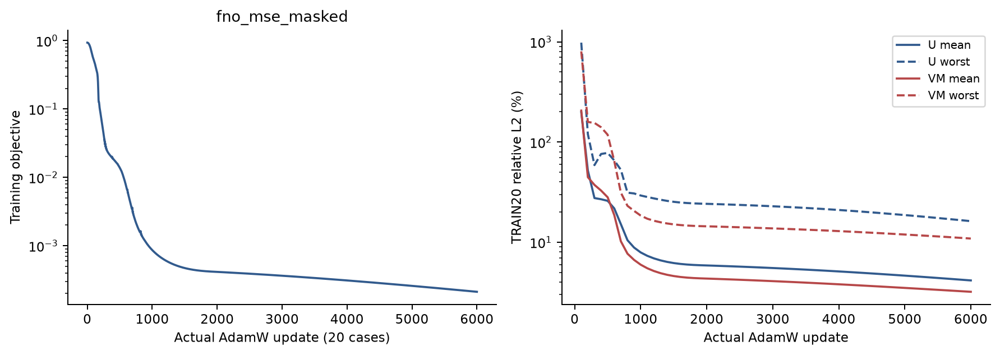
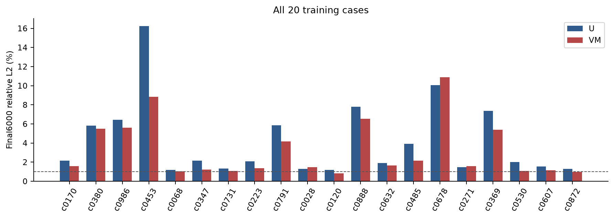
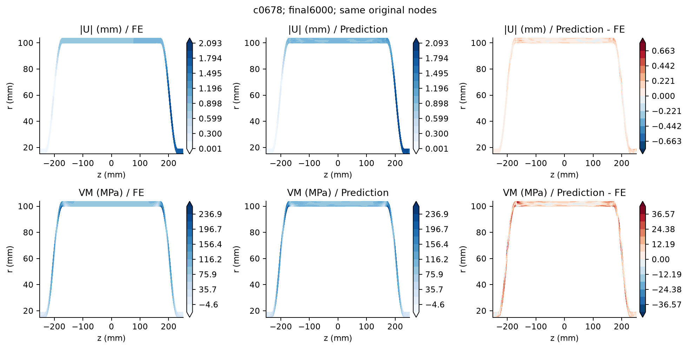
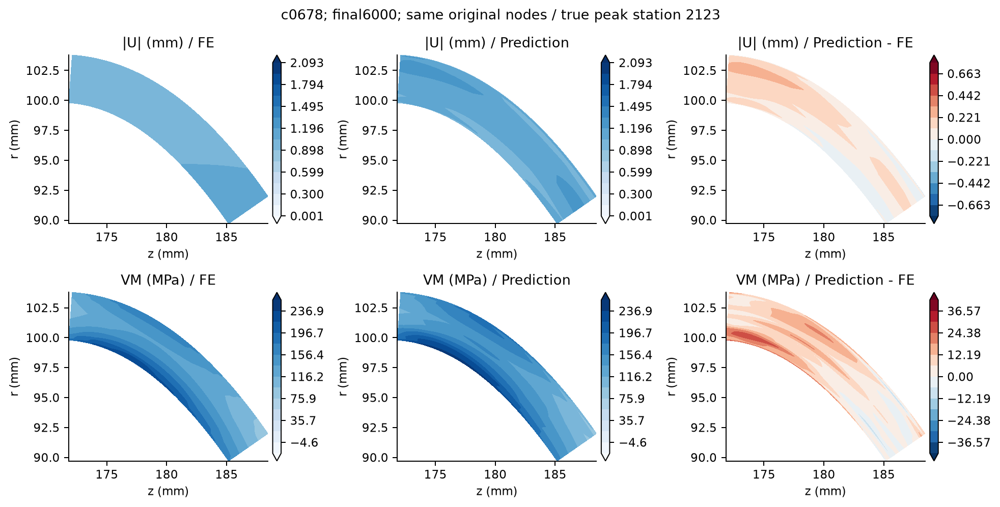

6000 full 20-case updates; 984860 parameters; best_train update 6000. All cases U and VM <=1%: False. No heldout or generalization claim.
| Final6000 metric | Mean (%) | Worst (%) |
|---|---|---|
| U_relative_L2 | 4.158607 | 16.228802 |
| VM_relative_L2 | 3.203421 | 10.883755 |
| peak5_VM_relative_L2 | 1.887943 | 7.984848 |
| VM_max_relative_error | 1.619301 | 9.198386 |
| VM_at_true_peak_relative_error | 1.371076 | 9.198386 |
Negative VM cases: 7; minimum -38.28886310257962 MPa. Raw values preserved.
TRAIN20 only. CPU checkpoint/metrics audit; no CPU full-model forward replay, GPU update replay, FE re-solve or heldout generalization claim.
Both prediction sets: per-case CSV | CPU verification

Vector PDF
Vector PDF
Vector PDF
Vector PDF